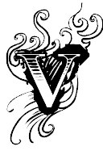
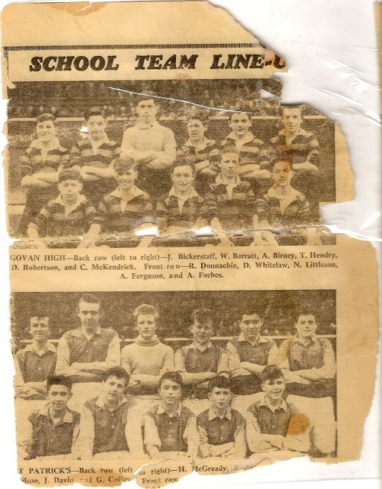

ậy mà tôi lại cảm thấy mình chẳng thiếu chi, bởi vì tôi đã có một quả banh làm bạn!”
Thật vậy!
Tình yêu bóng đá luôn chảy rần rật trong huyết quản cậu bé Alex, một thứ tình yêu có lẽ “di truyền” từ người cha, mặc dù hai cha con ủng hộ hai đội bóng đối nghịch nhau. Trong khi Alex bố ủng hộ Celtic, Alex con lại là fan cuồng của…Rangers! Về phần Martin, lúc đầu cậu theo bố, nhưng sau có lẽ bị rủ rê, nên chuyển qua theo anh. Không mấy khó hiểu khi Alex ủng hộ Rangers, bởi trong những năm 1940-1950, đội bóng này là lực lượng thống trị tại Scotland, hoàn toàn phủ bóng Celtic. Mùa 1948-1949, Rangers thậm chí trở thành CLB Scotland đầu tiên giành cú ăn ba: Vô địch quốc gia (VĐQG), Cúp Quốc Gia (QG), và Cúp Liên Đoàn (LĐ).
Hơn thế nữa, gia đình Ferguson lại ở gần ngay Ibrox, sân nhà của Rangers.Với sức chứa gần 120 000 người, Ibrox là cầu trường lớn vào bậc nhất trên thế giới.Tại Scotland, nó chỉ chịu đứng sau một mình Hampden Park[1]. Giữa khu lao động nghèo, Ibrox vươn lên sừng sững và ngạo nghễ, với khu khán đài A làm bằng gạch đỏ sang trọng, với sảnh đường đá cẩm thạch, với những hành lang ốp gỗ và những đèn chùm lóng lánh pha lê. Khi có tiền, Alex đường hoàng mua vé bước vào “thánh đường”, lúc rỗng túi thì đành kiếm cách leo rào vô xem cọp. Có lần bị bảo vệ rượt, cậu phải cắm đầu, vắt chân lên cổ mà chạy.Rủi thay, đang chạy thì rơi tõm xuống hố và bị tóm cổ.“Mày là thằng nào, nhà ở đâu?”Chú bảo vệ dọa “Tao phải mách mẹ mày mới được!”
Ông Alex bố phản ứng thế nào về việc các con ủng hộ Rangers? Chẳng phản ứng thế nào cả, ông chỉ đơn giản tôn trọng con. Ông tiếp tục mua vé đi xem Celtic, và cho tiền các con đi xem Rangers. Có điều, ông cấm hai con không được đến sân xem những trận derby Rangers- Celtic, bởi những trận này luôn rất nóng, và bạo lực luôn luôn diễn ra trên khán đài.Cha cấm như thế, nhưng con vẫn lén đi. Ai đời trận derby mà lại ru rú ở nhà! Nhưng đi đêm lắm có ngày gặp ma.Một hôm nọ, fan Rangers và Celtic xoay ra gây gổ, ném chai lọ vào nhau ngay chỗ anh em nhà Ferguson đang ngồi.Cánh báo chí ngay lập tức chĩa ống kính vào đấy.Alex nhanh trí nhảy liền xuống sân, còn Martin vẫn đứng lơ ngơ tại chỗ. Thế là ngày hôm sau, trên trang nhất tờ Sunday Express chình ình một tấm hình Martin đứng ngẩn người, chai lọ bay vèo vèo trên đầu. Ông bố nổi điên, xạc cho Martin một trận ra trò, đoạn quay qua Alex dò hỏi “Thế còn mày thì sao? Có đi xem không đấy?”. “Xem đâu, lúc đó con đang đá banh ngoài đường mà”, Alex đáp, tỉnh như ruồi.
Người huấn luyện viên (HLV) đầu đời của cậu Alex, không ai khác, chính là cha.Như đa số mọi người, Alex vốn thuận chân phải, nhưng cha cậu kiên trì tập cho cậu đá thuận cả hai chân. Tập riết rồi, Alex đá chân trái còn giỏi hơn chân phải! Khi sút, cậu toàn dùng chân trái.Vị trí yêu thích của cậu là tiền đạo.Những khi bị bắt chơi thủ môn, cậu cố tình cho bóng lọt lưới, để lại được lên đá tuyến trên.
Alex chơi bóng ở khắp nơi, trên sân trường, và trên đường phố.Vào những ngày cuối tuần và ngày nghỉ lễ, cậu đá banh cả buổi không biết mệt.Trẻ em nghèo không điều kiện, chẳng phải lúc nào cũng có trái bóng đàng hoàng để mà chơi.Song không có bóng da thì lấy nùi giẻ quấn vào thành một cục tròn tròn cũng được, có hề hấn gì. Alex còn may mắn hơn nhiều bạn khác, vì không phải đá chân đất. Cậu được người hàng xóm thí cho đôi ba ta cũ. Cũ, nhưng đối với một cậu bé xóm nghèo đã là quý nhất đời.
Chơi trên hàng tiền đạo, Alex là chân sút giỏi, thường xuyên ghi bàn.Phong cách thi đấu của cậu rất rắn, và vô cùng quyết liệt.Trên sân đấu, không ai bắt nạt được Alex, và Alex cũng không để ai bắt nạt bất cứ đồng đội nào của mình. Hễ thấy đồng đội bị uy hiếp, Alex liền xông vào can thiệp ngay, dù đối phương có to lớn gấp mấy cũng không sợ. Sở dĩ Alex gan như vậy, một phần là vì cậu đã tính trước đường lui.Trên tường rào trường tiểu học Broomloan, Alex khám phá được cái lỗ nhỏ, vừa vặn với thân hình mình. Khi nào đánh thua mấy tên bự con, cậu luồn qua lỗ đó để trốn. Đối phương không chui lọt lỗ, không thể nào rượt kịp.
Lên bảy tuổi, Alex gia nhập “câu lạc bộ” (CLB) đầu tiên: Đội bóng nhí khu phố, do ông Boyd láng giềng làm “bầu”.“Bầu” Boyd đặt tên đội là Govan Rovers, và mua cho mỗi cầu thủ một chiếc áo Arsenal để làm đồng phục. Ở trường Broomloan, mọi chuyện không được tốt đẹp như thế: Các học sinh chỉ đá theo kiểu tự phát với nhau, chứ chẳng có giáo viên nào chịu đứng ra dẫn dắt. Thế nhưng, chẳng cần bầu, cũng chẳng cần HLV, chúng vẫn tự thành lập được một đội bóng của trường, để đi đá giao hữu cùng các trường khác.
Chơi bóng ở trường và khu phố chưa đã, năm chín tuổi, Alex vào đoàn thể Life Boys, một tổ chức giành cho thiếu niên Tin Lành( về một số phương diện, tương tự như Đội Thiếu Niên Tiền Phong ở nước ta). Trong khi người khác vào Life Boys để học kỹ năng và giáo lý, hòng trở thành một thiếu niên gương mẫu, Alex gia nhập chỉ để được chơi đá banh. “Khi nào đi sinh hoạt, câu hỏi đầu tiên của cu cậu cũng là: Thầy ơi, Chủ Nhật này có đá banh không?” Anh phụ trách Life Boys kể lại “Thế là tôi phải khuyến khích: Sinh hoạt tốt đi, chịu khó làm bài tập thì Chủ Nhật sẽ được đá. Cu cậu nghe xong, đi làm bài ngay.”Chính tại Life Boys, Alex đã giành chiếc cúp đầu tiên trong cuộc đời. Chỉ là chiếc cúp phong trào giành cho thiếu niên mà thôi, nhưng cũng đủ sướng đến mê người!
“Cu cậu chẳng sợ gì” anh phụ trách nói tiếp “Dù bị đối phương chơi cho bầm dập, cu cậu vẫn cứ lầm lũi đá tiếp, không nửa lời rên rỉ, không như một số em khác, hễ xây xước một tý thì giận dữ:Tao ứ chơi nữa!”. Lần nọ, Alex bị đá trúng đầu gối, nặng đến độ anh phụ trách phải đưa cậu vào bệnh viện.Thế mà vừa ra viện, cậu lại xỏ giầy vào chơi bóng ngay.
Không như Broomloan Road, trung học Govan có truyền thống bóng đá, và Alex Ferguson nhanh chóng trở thành ngôi sao trong đội tuyển trường.Cứ mỗi thứ bảy, khi tuyển trường thi đấu, ông Alex bố lại tự hào đến xem con mình ghi bàn.Tự hào thật, song ông giữ kín ở trong lòng, không để lộ ra ngoài cho con biết. Mỗi khi cậu Alex hỏi “Thấy con chơi được không?”, ông toàn đưa ra những lời phê bình kiểu như “Chưa được, còn chậm quá, cần tăng tốc lên”, “Cố gắng đá chân trái giỏi hơn nữa, “Phải chịu khó sút nhiều vào”…Sau một lần ghi đến bốn bàn trong trận đấu, Alex trở về nhà, hớn ha hớn hở. Mẹ cậu xuýt xoa “Con tôi giỏi quá”, trong khi người cha gắt gỏng “Tệ quá chứ giỏi gì, chẳng bao giờ chịu chuyền cho đồng đội”.Song Alex không buồn, cậu biết rõ những lời chỉ trích của cha đều mang tính xây dựng, cha chê chỉ để mình ngày càng tiến bộ hơn.
Lúc bấy giờ, ngoài việc chơi bóng cho tuyển trường Govan, Alex còn cùng lúc khoác áo hai CLB thiếu niên khác: Harmony Row và Drumchapel. Tại Harmony Row, cậu được ông bầu Mick McGowan “khai tâm” những bài học đầu tiên về chiến thuật. Trước giờ, Alex chỉ chơi bóng theo bản năng, chứ nào biết chiến thuật là gì. Nghe ông bầu dạy “Alex, con lừa bóng nhiều quá, từ nay phải học cách phân phối bóng mới được”, cậu ngẩn người ra, vì không hiểu “phân phối bóng” có nghĩa như thế nào, đành chỉ dạ dạ vâng vâng, rồi về nhà hỏi lại cha.
So với Harmony Row, Drumchapel là đội bóng lớn, được chơi cho họ có thể nói là một vinh dự.Lại càng vinh dự hơn khi Alex được chính ông bầu của Drumchapel đến tận nhà mời về chơi cho đội.Chỉ khổ một nỗi, trụ sở của Drumchapel lại nằm cách xa Govan. Mỗi lần đến đó, Alex phải đi xe buýt hay xe điện, mất đến một tiếng đồng hồ. Suốt ngày đá bóng, lại mất biết bao thời gian di chuyển, không lạ gì khi thành tích học tập của cậu ngày càng sa sút.
Tiếng tăm lan xa, vào tháng tư năm 1958, Alex được chọn vào đội tuyển học sinh Scotland đi London thi đấu giao hữu với học sinh Anh. Đến tháng sáu, cậu lại khoác áo tuyển học sinh Glasgow đá giao hữu với học sinh London tại Hampden Park.Trong trận này, Alex đá hỏng phạt đền, và bị nhà báo Malcolm Munroe của một tờ báo địa phương chỉ trích nặng nề. Đọc được những nhận xét trên, cậu viết thư gửi thẳng cho Munroe:
“Chú chỉ trích cháu rất đúng… Hy vọng hôm nào đó chú quay lại xem cháu thi đấu, cháu hứa sẽ đá hay hơn.Hôm Chủ Nhật vừa rồi, chính cháu cũng thất vọng với bản thân mình.Cháu sắp sửa từ giã cuộc đời học sinh, không ngờ rằng cháu phải ra đi với một màn trình diễn tệ hại đến vậy.”
“Alex, cháu mến”, Munroe hồi âm, “Sau khi viết xong bài báo, chú cảm thấy mình đã quá nặng lời. Đọc xong thư cháu, chú thấy rằng, tuy mới mười sáu, nhưng cháu đã thực sự là một người đàn ông chân chính.”
Không lâu sau đó, Alex rời ghế nhà trường.

Đội hình trung học Govan trong trận gặp St Patrick’s. Alex Ferguson là người đang ngồi, thứ tư từ trái sang phải (ảnh: Friendsreunited.co.uk)
[1] Tại Hampden Park, vào tháng năm năm 1953, Alex Ferguson có mặt trên khán đài, theo dõi trận Manchester United – Glasgow Rangers 2-1. Đó là lần đầu tiên Sir Alex xem United thi đấu.